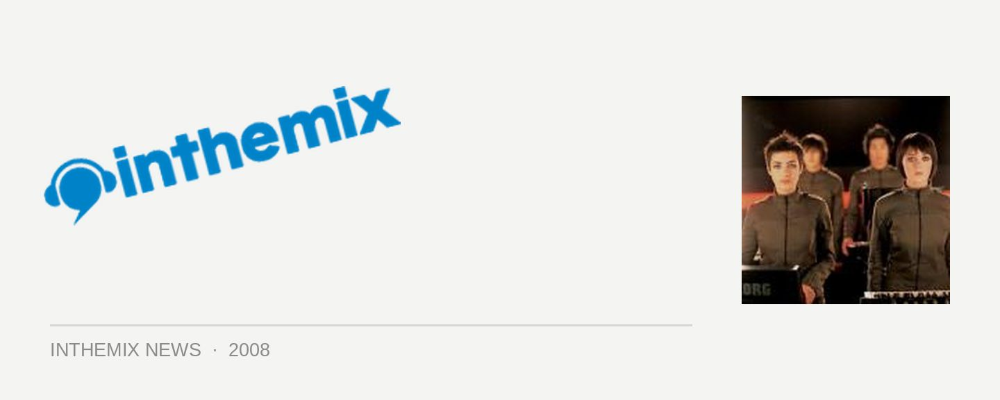

Ladytron 2nd Melbourne show announced
With the announcement last week that Ladytron are set to visit Australia this year for their debut live tour, the first Melbourne show at The Corner completely sold out in just over 48 hours. Not to fear, however – the 2nd and final gig at The Corner will be happening on Friday October 3rd, and tickets are now on sale on ITM.
Credited with popularising the electroclash sound but living on to effortlessly transcend that tag, Ladytron’s latest album Velocifero was produced by Alessandro Cortini of Nine Inch Nails and Vicarious Bliss from the ever-popular Ed Banger label. The tour is presented by Civil Society and inthemix, and Swedish electro-pop duo Familjen will be playing all shows as the support act.
Tickets on sale now to the 2nd and final Melbourne show on Friday October 3rd, here are the full national dates…
Sat 27th Sep – Adelaide, Parklife
Mon 29th Sep – Sydney, Metro Theatre
Wed 1st Oct – Brisbane, The Tivoli
Thu 2nd Oct – Melbourne, The Corner (SOLD OUT)
Fri 3rd Oct – Melbourne, The Corner
Sat 4th Oct – Sydney, Great Escape Festival
Sun 5th Oct – Perth, The Bakery Artrage Complex